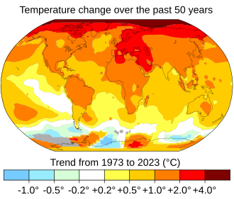
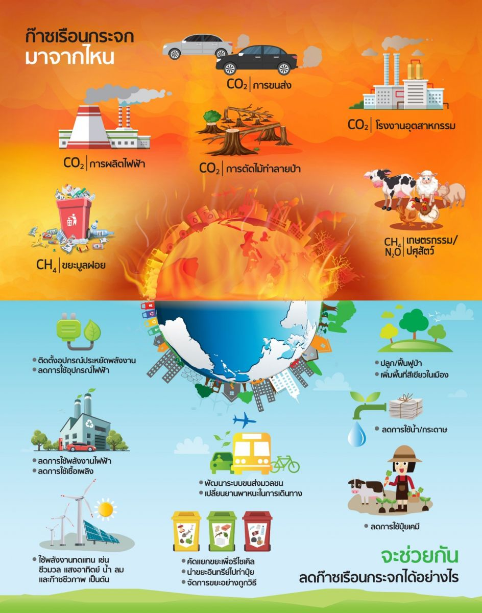

ภาวะโลกร้อน (Global Warming)
หมายถึง การเพิ่มขึ้นของอุณหภูมิเฉลี่ยของบรรยากาศโลก มหาสมุทร และพื้นดิน ซึ่งเป็นปรากฏการณ์หลักของการเปลี่ยนแปลงสภาพภูมิอากาศ [1]
โลกร้อนมี "อะไรบ้าง" สามารถอธิบายได้ใน 3 ประเด็นหลัก ได้แก่:

| 1. สาเหตุหลักของโลกร้อน สาเหตุสำคัญที่สุดคือการกระทำของมนุษย์ (anthropogenic activities) ที่ปล่อยก๊าซเรือนกระจก (Greenhouse Gases - GHGs) ออกสู่ชั้นบรรยากาศมากเกินไป ก๊าซเหล่านี้ทำหน้าที่เหมือนผ้าห่มที่กักเก็บความร้อนจากดวงอาทิตย์ไว้ [1, 2] ก๊าซคาร์บอนไดออกไซด์ (CO2): มาจากการเผาไหม้เชื้อเพลิงฟอสซิล (น้ำมัน ก๊าซธรรมชาติ ถ่านหิน) ในภาคอุตสาหกรรม การขนส่ง และการผลิตไฟฟ้า [2] ก๊าซมีเทน (CH4): มาจากกิจกรรมทางการเกษตร (เช่น นาข้าว ปศุสัตว์) การฝังกลบขยะ และการผลิตพลังงาน [2] ก๊าซไนตรัสออกไซด์ (N2O): มาจากการใช้ปุ๋ยเคมีและการเผาไหม้ [2] การตัดไม้ทำลายป่า: ต้นไม้ช่วยดูดซับ CO2 เมื่อป่าถูกทำลาย ทำให้ความสามารถในการกำจัดก๊าซเรือนกระจกลดลง [1] |
| 2. ผลกระทบหรือสิ่งที่เกิดขึ้นจากโลกร้อน การที่อุณหภูมิโลกสูงขึ้นส่งผลกระทบเป็นวงกว้างและรุนแรงต่อระบบนิเวศและชีวิตมนุษย์ [1, 3] การเปลี่ยนแปลงสภาพภูมิอากาศที่รุนแรง: เกิดภัยพิบัติบ่อยขึ้น เช่น คลื่นความร้อน (heat waves) ที่รุนแรงขึ้น, พายุไซโคลน/ไต้ฝุ่นที่มีกำลังแรงขึ้น, น้ำท่วมฉับพลัน และภัยแล้งที่ยาวนาน [3] น้ำแข็งขั้วโลกละลาย: ทำให้น้ำทะเลมีปริมาณเพิ่มขึ้น ส่งผลให้ระดับน้ำทะเลเฉลี่ยทั่วโลกสูงขึ้น [3] พื้นที่ชายฝั่งถูกกัดเซาะและจมน้ำ: หลายเมืองใหญ่หรือเกาะเล็กๆ มีความเสี่ยงที่จะถูกน้ำท่วมถาวร [3] ผลกระทบต่อสิ่งมีชีวิตและระบบนิเวศ: สิ่งมีชีวิตหลายชนิดไม่สามารถปรับตัวกับการเปลี่ยนแปลงอุณหภูมิที่รวดเร็วได้ เกิดการย้ายถิ่นฐานหรือสูญพันธุ์ (เช่น ปะการังฟอกขาว) [3] ความไม่มั่นคงทางอาหาร: ผลผลิตทางการเกษตรและประมงลดลงเนื่องจากสภาพอากาศที่ไม่แน่นอน [3] |
| 3. แนวทางแก้ไขและสิ่งที่ต้องทำ การรับมือกับโลกร้อนจำเป็นต้องอาศัยความร่วมมือจากทุกภาคส่วน ทั้งในระดับบุคคล ประเทศ และองค์กรระหว่างประเทศ [4] การลดการปล่อยก๊าซเรือนกระจก: เปลี่ยนไปใช้พลังงานสะอาดหรือพลังงานหมุนเวียน (เช่น พลังงานแสงอาทิตย์ ลม) แทนเชื้อเพลิงฟอสซิล [4] การเพิ่มพื้นที่สีเขียว: ปลูกป่าและอนุรักษ์ป่าไม้ที่มีอยู่เพื่อช่วยดูดซับ CO2 [4] การปรับเปลี่ยนพฤติกรรมส่วนบุคคล: ประหยัดพลังงานในบ้าน (ปิดไฟถอดปลั๊ก) ลดการใช้รถยนต์ส่วนตัว หันมาใช้ระบบขนส่งสาธารณะ เดิน หรือปั่นจักรยาน ลดการบริโภคเนื้อสัตว์บางประเภท (เช่น เนื้อวัว) ลดปริมาณขยะและนำสิ่งของกลับมาใช้ซ้ำ (Reuse, Reduce, Recycle) [4] นโยบายภาครัฐ: การออกกฎหมายและข้อบังคับเพื่อควบคุมการปล่อยมลพิษของภาคอุตสาหกรรม และสนับสนุนเทคโนโลยีสะอาด [4] โดยสรุป โลกร้อนคือวิกฤตการณ์ที่ครอบคลุมทั้งสาเหตุ ผลกระทบ และแนวทางแก้ไขที่ซับซ้อนและเชื่อมโยงถึงกันครับ |
